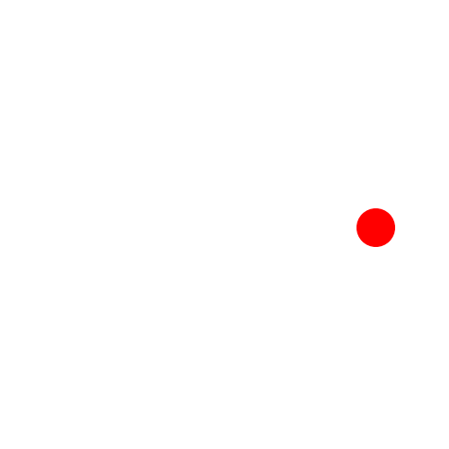
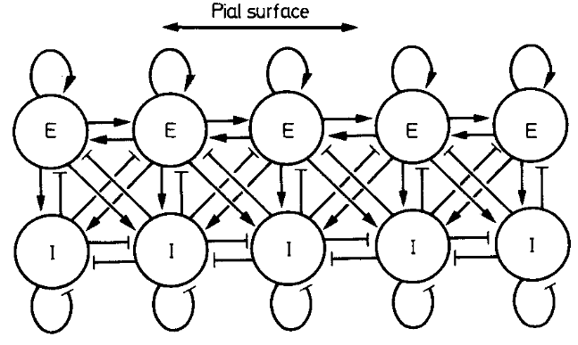
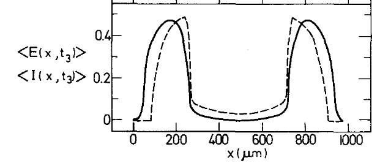
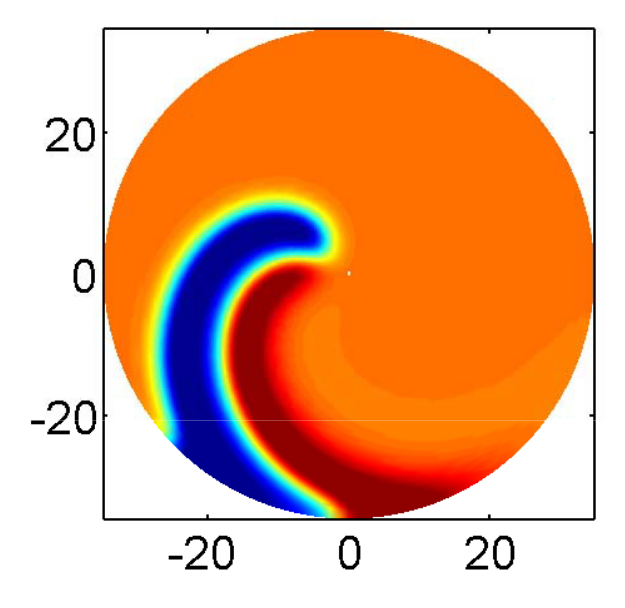
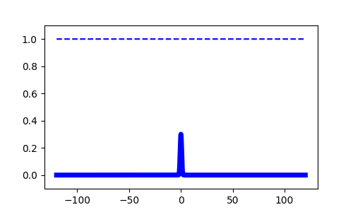

Control of traveling waves in adaptive neural fields
Sage Shaw - April 4th, 2023
Outline
- Neural field model
- Traveling wave solutions
- The wave response
- Entrainment
- Future work


Neural Field Model

Image courtesy of Heather Cihak.


Wilson and Cowan (1973)

Liang (2005)
\begin{align*} \color{gray}{\tau_u} \color{green}{u}_t &= -\color{green}{u} + \int_\mathbb{R} \color{yellow}{w}(x, y) \color{cyan}{q}(y,t) \color{magenta}{f}(\color{green}{u}(y,t)) \ dy \\ \color{gray}{\tau_q} \color{cyan}{q}_t & = 1 -\color{cyan}{q} - \color{gray}{\beta} \color{cyan}{q}\color{magenta}{f}(\color{green}{u}) \end{align*}
- $\color{green}{u}(x,t)$ - Activity
- $\color{cyan}{q}(x,t)$ - Synaptic efficacy
- $\color{gray}{\tau_u}, \color{gray}{\tau_q}$ - time constants
- $\color{yellow}{w}(x,y) = \frac{1}{2}e^{-|x-y|}$ - Weight kernel
- $\color{magenta}{f} = H(\cdot - \theta)$ - firing-rate function
- $\color{gray}{\beta}$ - rate of depletion
- $\gamma = \frac{1}{1+\beta}$
